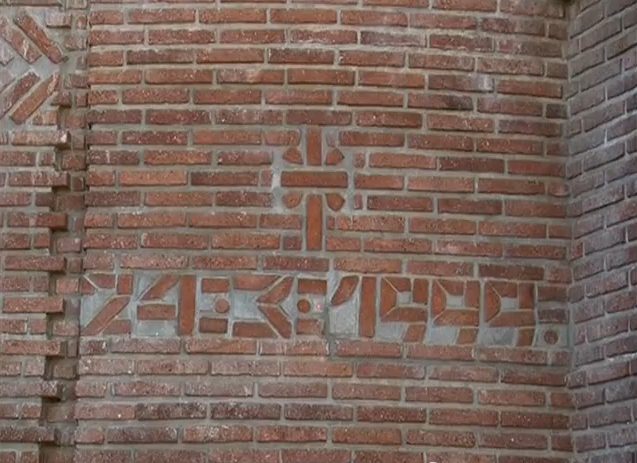

Основне информације:
- Локација: Београд, Србија
- Религија: Хришћанство
- Општина: Нови Београд
- Држава: Србија
- Патрон: Свети Василије Острошки
- Архитекта: Михајло Митровић
- Оснивање: 2001.година
Занимљив детаљ Храма
Занимљив детаљ на Храму је свакако слог опека са датумом „24.03.1999.“ – којим је на симболичан начин обележен дан великог страдања нашег народа, односно почетак НАТО агресије на тадашњу Савезну Републику Југославију (СРЈ) која је трајала 78 дана 1999. године. Архитекта Михајло Митровић, иако је почело бомбардовање, дошао је на градилиште и рекао мајсторима да на том месту, до ког су стигли са радовима, обележе датум слогом опека – датум почетка немилосрдног бомбардовања наше земље.
Интересантна је чињеница да је Храм једина грађевина у Београду која је на овакав начин обележила бомбардовање и оставила својеврсни записани траг на зиду Божијег храма о овим немилим временима.